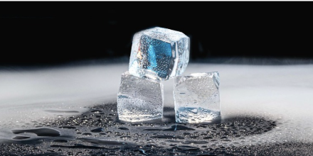
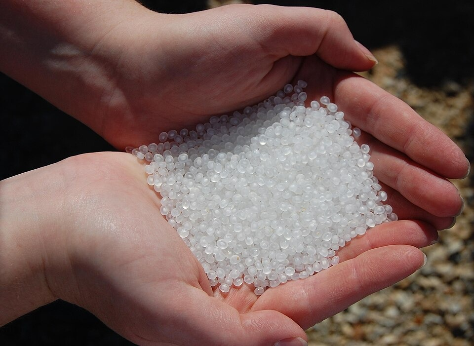
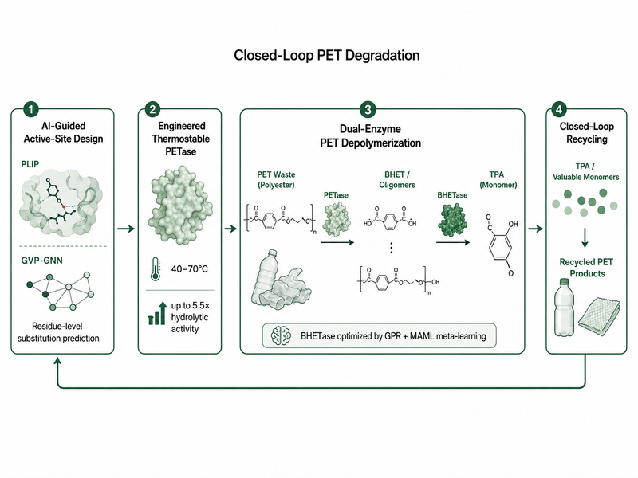
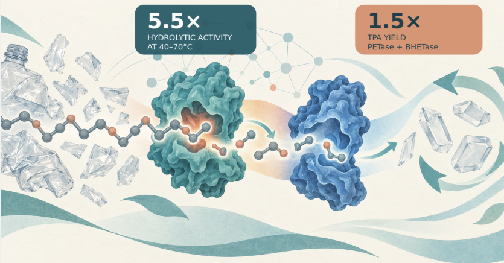

Accumulation
Millions of tons of PET accumulate in landfills and oceans, while natural degradation can take centuries.
This is a crisis in the making
What is at stake?
Millions of tons of PET accumulate in landfills and oceans, while natural degradation can take centuries.
PET waste breaks into microplastics that can spread through marine ecosystems and food chains.
Traditional physical and chemical recycling can be energy-intensive and may create secondary pollution.
From waste to resource, PET degradation faces critical bottlenecks
Despite advances in biocatalysis, industrial-scale plastic recycling is hindered by severe limitations.


Current methods are too slow for a fast-growing crisis
We replace random mutations with Graph Neural Networks for precise active-site engineering. Furthermore, we deploy a synergistic dual-enzyme system (PETase + BHETase) to ensure the complete conversion of plastic waste into valuable TPA.

Key results & impact
Our AI-guided framework integrates graph learning, meta-learning, experimental validation, and mechanistic simulation to engineer PET hydrolases with improved catalytic performance and thermal robustness.
Engineered variants achieved up to 5.5x higher hydrolytic activity than their wild-type counterparts at 40-70C. An ML-optimized PETase/BHETase dual-enzyme system further improved intermediate conversion, increasing TPA yield by up to 1.5x.

Let's explore PIM-NEBS